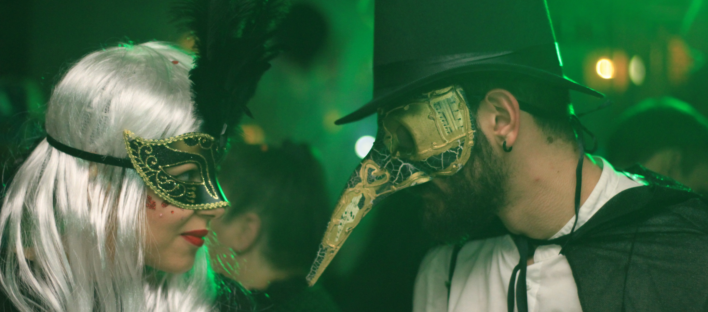

MODERN DAY
By the 1950s Halloween became a holiday that was primarily for the children. Trick-or-treating was commonplace as kids went around their neighborhoods in costume collecting candy. Halloween became increasingly embedded in popular culture and horror movies would often be released to coincide with the holiday. Movies such as “Nightmare on Elm Street,” “Halloween,” and “Friday the 13th” have all become classics associated with the holiday.
Halloween is now America’s second-largest commercial holiday, with $6 billion being spent on it each year. Numerous traditions such as trick-or-treating, costume parties, and watching horror movies all contribute towards a huge occasion that is celebrated throughout the country.
